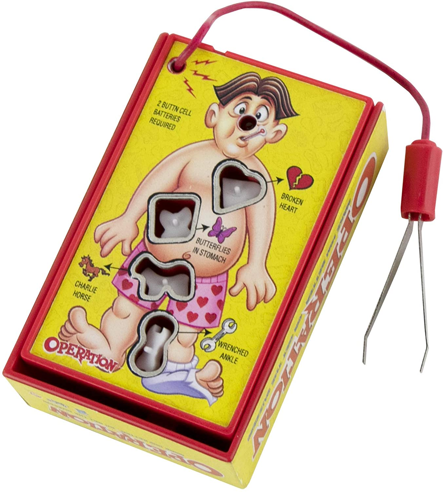

1. The Game of Life
How could we not include Life in this roundup? We remember playing this game as kids and dreaming about all the possibilities (and responsibilities) that came with being a grown-up—college, marriage, kids, insurance! In this classic game, players each receive a plastic car to maneuver around the game board that represents the move through multiple stages of life, from picking a college to enjoying sweet retirement. The premise of this game is to go through life making smart decisions and eventually be the player who retires first and with the most money.

Photo Credits: https://www.amazon.com/
2. Checkers
Don't let the simple looks of this game fool you, there can be a lot of excitement in a game of checkers. You and your opponent are each responsible for 12 uniform game pieces, which you are allowed to move diagonally across the 8x8 checkerboard. Maneuver a piece all the way across the board and you get to crown a king; jump an opponent's piece and you get to capture it and remove it from play.
3. Operation
The poor patient in Operation sure has a lot of ailments: writer's cramp, water on the knee, and brain freeze are just the start. In this game, you get to be the doctor, and it's your job to relieve the patient by removing all 13 of his ailments. The retrieval process can be tricky though. You have to use a pair of tweezers to remove the small plastic ailment, and if you miss and hit the sides of the patient, the game buzzes, and another player, "the specialist," gets to try.
4. Uno
All you need to play this fun family game is the Uno card deck. There are no other marbles, spinners, or game pieces required, which makes this quick to clean up and great to take on the go. An Uno deck contains 108 cards—25 cards each in one of four colors, plus 8 special action cards (like Skip and Reverse). Players take turns matching a card from their hand by number or color to the card in the middle of the game.
5. Sorry!
Move your four pawns around the board and safely navigate them home again in the game of Sorry. All pawns begin in their respective start spaces, and players take turns drawing from a deck of 44 cards to see what the pawn's next move might be. Sorry is a competition, and there are two ways to set back your opponents. Similar to the game Trouble, if you land on a space that is already occupied by another player's pawn, that pawn is sent back to the start. The second way to create a setback is by drawing one of the deck's four "Sorry" cards.
Photo Credits: https://www.amazon.com/
6. Ticket to Ride
The railway-themed Germany board game has a range of monikers, including Zug um Zug, Les Aventuriers du Rail, Aventureros al Tren, Wsiąść do pociągu, and Menolippu. Select from multiple cities and countries from New York to Amsterdam, France to India and hop aboard an adventure of claiming railway routes to connect between destinations. Earn more points for longer routes and fulfilling Destination Tickets by connecting two distant cities in a country-wide session.
7. Jenga
No matter your age, the anticipation of drawing a piece followed by the thrill of the tower collapsing will never get old. This game can go on to nerve-wracking levels of crisscrossed blocks precariously balancing or just topple over again and again in a more careless, playful manner. Practice spotting the perfect piece, perhaps get frustrated over another’s selection and prepare for some screeching and laughter before doing it all over.
8. Twister
Have you ever played a game of Twister that didn’t end in uncontrollable laughter? One of the few physical board games around, Twister is a classic, and it isn't hard to understand why; seeing your friends contort in any way possible to place a left hand on green and a right foot on yellow will never not be funny. There is nothing better than collapsing in a giggle-induced pile with some of your favorite people.
9. Battleship
In this two-person game of strategy, players secretly arrange their ships on a lettered and numbered 10x10 grid and then try to locate and destroy their opponent's fleet. There are two grids for each player. One grid is used for placing your own vessels and tracking hits made against you, while the second grid is for marking the hits targeted at your opponent. Take turns firing shots by calling out one of the grid's plot points. If a hit doesn't strike a ship, it's considered a miss and pegged with white pieces. If a hit makes contact with a ship, then that strike gets pegged with red. The number of hits each kind of vessel can sustain before it sinks is varied.
10. Monopoly
The first official Monopoly game hit the market in 1935, and this game of buying property has been creating real estate titans ever since. The board game requires risk and luck, as players buy and trade properties and try to not get thrown in jail. If you have the funds, players are allowed to buy available properties. You can then make income during the game by charging the other players' rent if they land on any of the spaces that you own. In order to win the game, you have to bankrupt your opponents, which can take a while. The idea is to buy enough property on the same part of the board that you create a monopoly and eventually the other players won't be able to afford to pay your rent anymore.